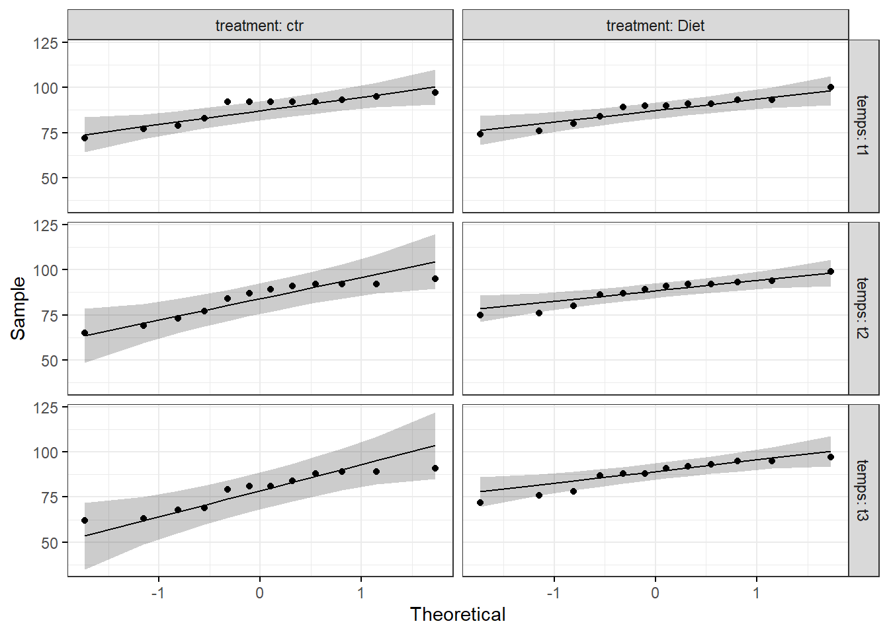

Chapitre 3 Test de friedman avec R
3.1 Les librairies
3.2 Jeu de données
## # A tibble: 10 x 4
## id t1 t2 t3
## <int> <dbl> <dbl> <dbl>
## 1 1 4.01 5.18 7.11
## 2 2 2.56 6.91 6.31
## 3 3 3.24 4.44 9.78
## 4 4 3.42 4.71 8.35
## 5 5 2.87 3.91 6.46
## 6 6 2.05 5.34 6.65
## 7 7 3.53 5.58 6.84
## 8 8 3.18 4.37 7.82
## 9 9 3.51 4.40 8.47
## 10 10 3.04 4.49 8.58Rassemblez les colonnes t1, t2 et t3 en format long. Convertir les variables id et time en factor (ou variables de regroupement)
selfesteem <- selfesteem %>%
gather(key = "time", value = "score", t1, t2, t3) %>%
convert_as_factor(id, time)
head(selfesteem)## # A tibble: 6 x 3
## id time score
## <fct> <fct> <dbl>
## 1 1 t1 4.01
## 2 2 t1 2.56
## 3 3 t1 3.24
## 4 4 t1 3.42
## 5 5 t1 2.87
## 6 6 t1 2.053.3 Statistiques sommaires
Calculer quelques statistiques sommaires du score de l’estime de soi par groupe (time)
## # A tibble: 3 x 11
## time variable n min max median iqr mean sd se ci
## <fct> <chr> <dbl> <dbl> <dbl> <dbl> <dbl> <dbl> <dbl> <dbl> <dbl>
## 1 t1 score 10 2.05 4.00 3.21 0.571 3.14 0.552 0.174 0.395
## 2 t2 score 10 3.91 6.91 4.60 0.89 4.93 0.863 0.273 0.617
## 3 t3 score 10 6.31 9.78 7.46 1.74 7.64 1.14 0.361 0.8173.4 Visualisation
Créer un box plot et ajouter des points correspondant à des valeurs individuelles

3.5 Le test
Nous utiliserons la fonction friedman_test() [paquet rstatix], un wrapper autour de la fonction de base R friedman.test().
## # A tibble: 1 x 6
## .y. n statistic df p method
## * <chr> <int> <dbl> <dbl> <dbl> <chr>
## 1 score 10 18.2 2 0.000112 Friedman testLe score de l’estime de soi est statistiquement significativement différent aux différents temps durant le régime, X2(2) = 18,2, p = 0,0001.
3.6 Taille de l’effet
Le W de Kendall peut être utilisé comme mesure de la taille de l’effet du test de Friedman. Il se calcule comme suit : W = X2/N(K-1) ; où W est la valeur W de Kendall ; X2 est la valeur statistique du test de Friedman ; N est la taille de l’échantillon. k est le nombre de mesures par sujet (M. T. Tomczak and Tomczak 2014).
Le coefficient W de Kendall prend la valeur de 0 (indiquant l’absence de relation) à 1 (indiquant une relation parfaite).
Le W de Kendall utilise les recommandations d’interprétation de Cohen: 0,1 - < 0,3 (petit effet), 0,3 - < 0,5 (effet modéré) et >= 0,5 (effet important). Les intervalles de confiance sont calculés par bootstap.
## # A tibble: 1 x 5
## .y. n effsize method magnitude
## * <chr> <int> <dbl> <chr> <ord>
## 1 score 10 0.91 Kendall W largeUne grande taille d’effet est détectée, W = 0,91.
3.7 Comparaisons multiples par paires
D’après les résultats du test de Friedman, nous savons qu’il y a une différence significative entre les groupes, mais nous ne savons pas quelles paires de groupes sont différentes.
Un test de Friedman significatif peut être suivi de tests des rangs de Wilcoxon pour identifier quels groupes sont différents.
Notez que les données doivent être correctement ordonnées par la variable de bloc (id) pour que la première observation du temps t1 soit appariée avec la première observation du temps t2, et ainsi de suite.
Comparaisons par paires à l’aide du test apparié des rangs signés de Wilcoxon. Les p-values sont ajustées à l’aide de la méthode de correction des tests multiples de Bonferroni.
## # A tibble: 3 x 9
## .y. group1 group2 n1 n2 statistic p p.adj p.adj.signif
## * <chr> <chr> <chr> <int> <int> <dbl> <dbl> <dbl> <chr>
## 1 score t1 t2 10 10 0 0.002 0.006 **
## 2 score t1 t3 10 10 0 0.002 0.006 **
## 3 score t2 t3 10 10 1 0.004 0.012 *Toutes les différences par paires sont statistiquement significatives.
Notez qu’il est également possible d’effectuer des comparaisons par paires à l’aide du test de signe, qui peut manquer de puissance pour détecter les différences dans les jeux de données appariés. Cependant, il est utile parce qu’il ne comporte que peu d’hypothèses sur les distributions des données à comparer.
## # A tibble: 3 x 10
## .y. group1 group2 n1 n2 statistic df p p.adj p.adj.signif
## * <chr> <chr> <chr> <int> <int> <dbl> <dbl> <dbl> <dbl> <chr>
## 1 score t1 t2 10 10 0 10 0.002 0.006 **
## 2 score t1 t3 10 10 0 10 0.002 0.006 **
## 3 score t2 t3 10 10 1 10 0.021 0.064 ns3.8 Interprétation
Le score de l’estime de soi était statistiquement significativement différent aux différents points de temps en utilisant le test de Friedman, X2(2) = 18,2, p = 0,00011.
Le test des rangs signés de Wilcoxon entre les groupes a révélé des différences statistiquement significatives dans le score d’estime de soi entre t1 et t2 (p = 0,006) ; t1 et t3 (0,006) ; t2 et t3 (0,012).
3.9 Visualisation : boxplots avec p-values
pwc <- pwc %>%
add_xy_position(x = "time")
ggboxplot(selfesteem, x = "time", y = "score", add = "point") +
stat_pvalue_manual(pwc, hide.ns = TRUE) +
labs(
subtitle = get_test_label(res.fried, detailed = TRUE),
caption = get_pwc_label(pwc)
)
3.10 References
Tomczak, Maciej T., and Ewa Tomczak. 2014. “The Need to Report Effect Size Estimates Revisited. an Overview of Some Recommended Measures of Effect Size.” Trends in SportSciences.